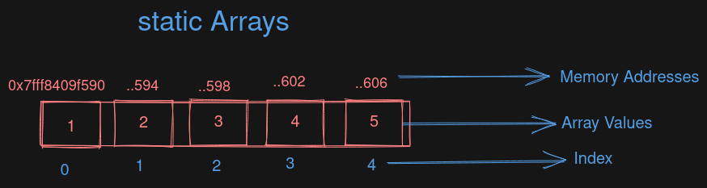
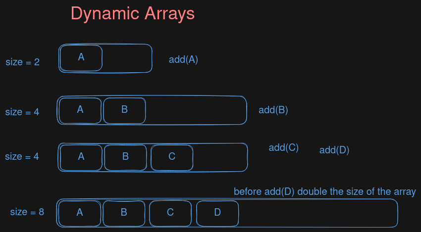

Arrays (TS)¶
- Arrays are contiguous portion of blocks in the memory
- Accessed via Index
https://drive.google.com/file/d/1SX7MZL_zSaySdueaYekdI_vsElv7B3HE/view?usp=drive_web
Static Arrays¶
Simplest form of array represented by contiguous blocks of memory

Memory address refers to the address of values → as u can see that the values are differ exactly by 4 because they are integers and each integer takes up 4 Bytes space Max Size chart below on Typed Arrays
-
Advantages
Access Elements at O(1) and efficient use of memory
compaction. Remember the College Days
-
Disadvantages
- Insertion and deletion is not efficient
- cannot use small spaces while we need a large portion thus wasting spaces
#include <iostream>
using namespace std;
int main () {
int arr[5] = {1,2,3,4,5};
cout << arr[0] << "...." << arr[4] << endl;
// cout << &arr[0] <<"\n"<< &arr[1] << "\n" << &arr[2]; // exactly by 4
cout << *(arr+0) << "..." << *(arr+4);
return 0;
}
- static arrays can be accessed via the index.
- well you can also access via pointer. really the pointers and arrays are similar than u think
Dynamic Arrays¶
Dynamic Arrays are also similar to static arrays but they have some advantages like dynamically increase or decrease its size
though it also comes with its own disadvantages as well. In C++ vectors in STL are the common example for dynamic arrays
How Dynamic Arrays work:¶
dynamic arrays are also like static arrays but the can increase the size by current size when N-1th element is added we assume that more values are added to this array and increment the size by the current length. you’re right
we cannot increment the instead create new array and copy all the contents to the new array. well this is way more efficient than many other ways
Python List and JavaScript Arrays and C++ Vectors are examples of Dynamic Arr
Example¶

As we can clearly see that when we add elements closer to the size of arr it will increase the size and copy all the elements to the new array
Array Buffer & Typed Arrays¶
ArrayBuffer -> basket of size (4)
Uint16Array(2KG) watermelon -> we can put 2 Melon on ArrayBuffer
Uint8Array(1KG) Muskmelon -> we can put 4 on current basket
ArrayBuffer - JavaScript | MDN
Size chart for typed arrays
Base class for u int
const buffer= new ArrayBuffer(4); // 4 bytes [0,0,0,0]
buffer[1]=23 // ! you cant do this
const oneByte=new Uint8Array(buffer) // create 4 (1 Byte arrays)
for (let i = 0; i < 4; i++)
oneByte[i]=2*i;
console.log(oneByte);//Uint8Array(4) [ 0, 2, 4, 6 ]
console.log(buffer); //ArrayBuffer(4) [ 0, 2, 4, 6 ]
Array Buffer provide fixed binary space for typed arrays like Uint8Array…..
Provide a way for efficient Bit wise operations
Typed Arrays¶
// typed arrays
const bigBuffer=new ArrayBuffer(16);
const oneByte = new Uint8Array(bigBuffer) // 16 (we can create 16 oneByteArrays)
const fourByte=new Uint32Array(bigBuffer);
console.log(oneByte.length);// 4 (each one is 4Bytes)
Typed Arrays are views → underlying buffer sizes
Think of a interface to modify the Array buffer